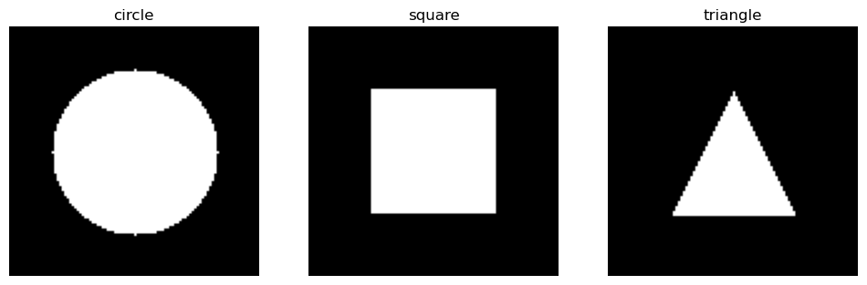
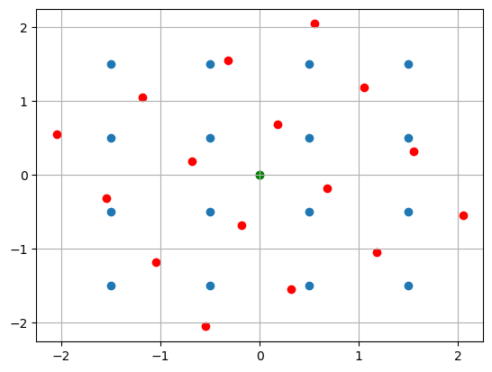
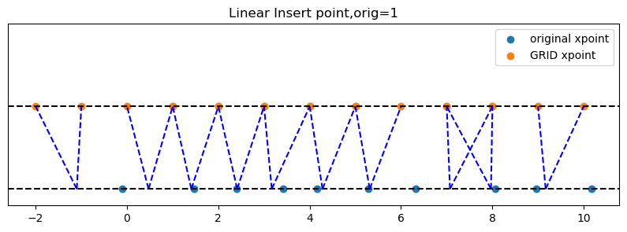
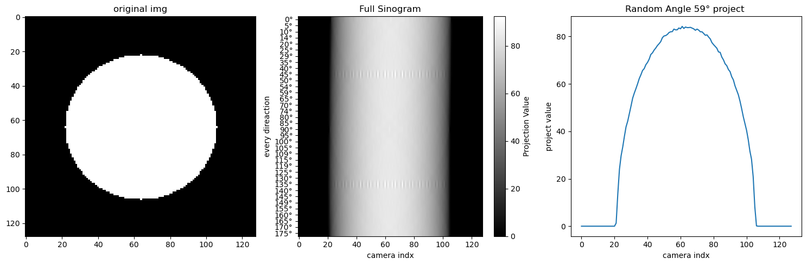
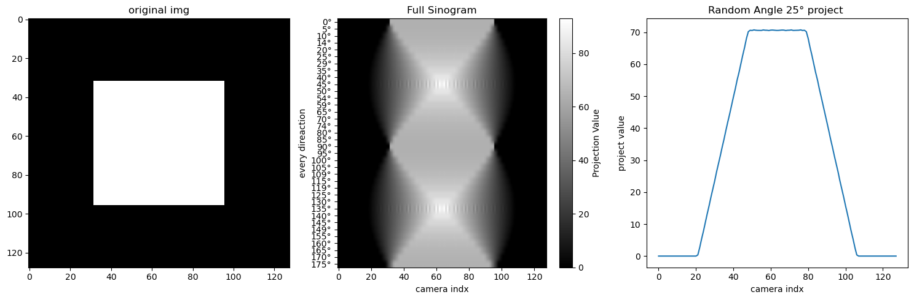
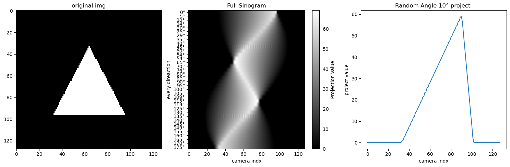
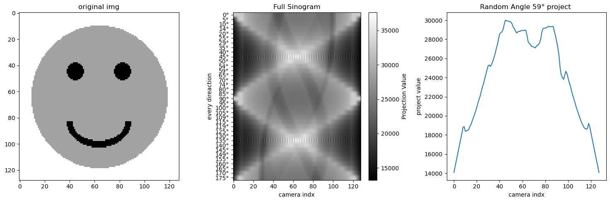
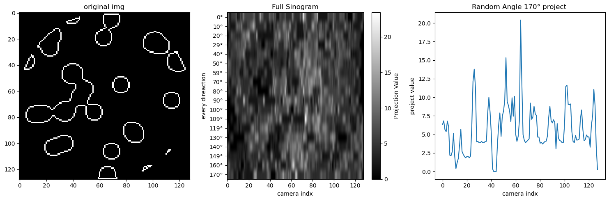
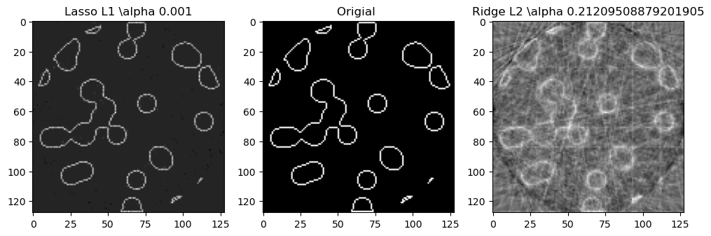

Compressive sensing: tomography reconstruction with L1 prior (Lasso)#
(压缩感知：使用 L1 先验 (Lasso) 进行CT重建)
原文连接
CT扫描、投影#
参考：
Youtube- CT Reconstruction: (Radon transform, Fourier Slice Theorem, & Convolution Backprojection)
Looking through Objects - How Tomography Works!
投影的理解，图像大小为$4*4$。
一个角度的投影就是 旋转点再原坐标轴（离散）的权重分配。
因为点旋转后落不到离散x上，所以通过插值分配。
点积分到旋转轴上， 和旋转点积分到原坐标轴上， 是等价的。
%matplotlib inline
---------------------------------------------------------------------------
ModuleNotFoundError Traceback (most recent call last)
Cell In[1], line 1
----> 1 get_ipython().run_line_magic('matplotlib', 'inline')
File /opt/hostedtoolcache/Python/3.10.19/x64/lib/python3.10/site-packages/IPython/core/interactiveshell.py:2482, in InteractiveShell.run_line_magic(self, magic_name, line, _stack_depth)
2480 kwargs['local_ns'] = self.get_local_scope(stack_depth)
2481 with self.builtin_trap:
-> 2482 result = fn(*args, **kwargs)
2484 # The code below prevents the output from being displayed
2485 # when using magics with decorator @output_can_be_silenced
2486 # when the last Python token in the expression is a ';'.
2487 if getattr(fn, magic.MAGIC_OUTPUT_CAN_BE_SILENCED, False):
File /opt/hostedtoolcache/Python/3.10.19/x64/lib/python3.10/site-packages/IPython/core/magics/pylab.py:103, in PylabMagics.matplotlib(self, line)
98 print(
99 "Available matplotlib backends: %s"
100 % _list_matplotlib_backends_and_gui_loops()
101 )
102 else:
--> 103 gui, backend = self.shell.enable_matplotlib(args.gui)
104 self._show_matplotlib_backend(args.gui, backend)
File /opt/hostedtoolcache/Python/3.10.19/x64/lib/python3.10/site-packages/IPython/core/interactiveshell.py:3667, in InteractiveShell.enable_matplotlib(self, gui)
3664 import matplotlib_inline.backend_inline
3666 from IPython.core import pylabtools as pt
-> 3667 gui, backend = pt.find_gui_and_backend(gui, self.pylab_gui_select)
3669 if gui != None:
3670 # If we have our first gui selection, store it
3671 if self.pylab_gui_select is None:
File /opt/hostedtoolcache/Python/3.10.19/x64/lib/python3.10/site-packages/IPython/core/pylabtools.py:338, in find_gui_and_backend(gui, gui_select)
321 def find_gui_and_backend(gui=None, gui_select=None):
322 """Given a gui string return the gui and mpl backend.
323
324 Parameters
(...)
335 'WXAgg','Qt4Agg','module://matplotlib_inline.backend_inline','agg').
336 """
--> 338 import matplotlib
340 if _matplotlib_manages_backends():
341 backend_registry = matplotlib.backends.registry.backend_registry
ModuleNotFoundError: No module named 'matplotlib'
1. 生成2值图像#
import matplotlib.pyplot as plt
from matplotlib.path import Path
import numpy as np
def generate_synthetic_data(size):
""" 生成一个2值图像: 包含很多圆圈圈
"""
rs = np.random.RandomState(42)
n_points = 36 # 着36个1点
x,y = np.ogrid[0:size, 0:size] # 网格行列索引，
mask_outer = (x - size/2)**2 + (y - size/2)**2 < (size/2)**2 # 圆布尔数组，半径为size/2
mask = np.zeros((size,size)) # 空白画布
points = size*rs.rand(2, n_points) # 生成2行36列， 每列为一个点， 值在[0,size)
mask[(points[0]).astype(int), points[1].astype(int)] = 1 # 标记这些点
mask = ndimage.gaussian_filter(mask,sigma= size/n_points) # 把这些点晕开，1晕开成周围的0.xx值
res = np.logical_and(mask>mask.mean(), mask_outer) # 取模糊后大于图像均值的点，且在园内的。 为布尔数组
return np.logical_xor(res,ndimage.binary_erosion(res)) # 只留下轮廓边界， 为布尔数组，布尔也可以直接和0，1表示，
def generate_synthetic_shape_data(size, shape):
""" 生成一个二值图像：支持圆形、矩形、三角形
Parameters:
size (int): 图像大小 (size x size)
shape (str): 形状类型 ["circle", "square", "triangle"]
Returns:
np.ndarray: 二值图像
"""
img = np.zeros((size, size), dtype=np.uint8)
if shape == "circle":
x, y = np.ogrid[:size, :size] # 生成网格
center = size // 2
radius = size // 3 # 半径
mask = (x - center) ** 2 + (y - center) ** 2 <= radius ** 2
img[mask] = 1
elif shape == "square":
margin = size // 4
img[margin:-margin, margin:-margin] = 1 # 中心填充
elif shape == "triangle":
# 定义三角形顶点
vertices = np.array([
[size // 2, size // 4], # 顶点
[size // 4, 3 * size // 4], # 左下角
[3 * size // 4, 3 * size // 4] # 右下角
])
x, y = np.meshgrid(np.arange(size), np.arange(size))
points = np.stack((x.ravel(), y.ravel()), axis=-1)
# 用 Path 判断点是否在三角形内
path = Path(vertices)
mask = path.contains_points(points).reshape(size, size)
img[mask] = 1
return img
import numpy as np
import matplotlib.pyplot as plt
from PIL import Image, ImageDraw
def generate_smiley(size=100):
""" 生成灰度笑脸图像 """
img = Image.new("L", (size, size), 255) # 创建白色背景灰度图像
draw = ImageDraw.Draw(img)
# 画圆形脸（中等灰度）
draw.ellipse((10, 10, size-10, size-10), fill=180)
# 画眼睛（深色）
draw.ellipse((size*0.3, size*0.3, size*0.4, size*0.4), fill=50)
draw.ellipse((size*0.6, size*0.3, size*0.7, size*0.4), fill=50)
# 画嘴巴（较深色）
draw.arc((size*0.3, size*0.5, size*0.7, size*0.8), start=0, end=180, fill=50, width=5)
return np.array(img)
# 画图
shapes = ["circle", "square", "triangle"]
fig, axes = plt.subplots(1, 3, figsize=(12, 4))
for ax, shape in zip(axes, shapes):
img = generate_synthetic_shape_data(100, shape)
ax.imshow(img, cmap="gray")
ax.set_title(shape)
ax.axis("off")

2. 投影算子生成#
import numpy as np
from scipy import ndimage, sparse
import pandas as pd
def _generate_center_coordinates(l_x):
""" 生成中心网络
"""
X,Y = np.mgrid[0:l_x, 0:l_x].astype(np.float64)
center = l_x / 2.0
X+= 0.5 - center
Y+= 0.5- center
return X,Y
def print_insert(x,indices,weights, orig):
"""
x:原始点
"""
print(f"PRINT INSERT size:{len(x)}, orig:{orig}")
# 打印插值结果
data = pd.DataFrame(
{
'x':x,
'left_X':indices[:len(x)],
'right_X':indices[len(x):],
'left_weight':weights[:len(x)],
'right_weight':weights[len(x):]
}
)
data['verify'] = (data['left_X']+orig) *data['left_weight'] + (data['right_X']+orig) * data['right_weight']
print(data)
def _weights(x, dx=1, orig=0):
""" 将X坐标数组映射到离散刻度上。 计算线性插值的索引和权重
Parameters
---
orig:坐标起始点, 对X偏移， orig=1:表示网格偏移，1.5表示网格左偏移1.5 。
dx:网格间距
Returns
----
[left_idx.., right_idx]
原X坐标对应相邻索引点, 对相邻索引点的权重贡献。
"""
x = np.ravel(x) # 输入展平为1维数组
floor_x = np.floor((x-orig) /dx).astype(np.int64)
alpha = (x - orig - floor_x*dx) /dx
return np.hstack((floor_x, floor_x + 1)),np.hstack((1 - alpha, alpha))
def build_project_operator(size, n_dir):
""" 构建投影算子（矩阵），用于将原始图像转换为投影数据
Parameters
----
size : int
原始图像大小。size * size
n_dir : int
使用的投影角度数
Returns
-----
p : 稀疏矩阵. n_dir *size(投影x索引) ,size**2
"""
X,Y = _generate_center_coordinates(size)
angles = np.linspace(0, np.pi, n_dir, endpoint=False) # 生成投影角度.
data_inds,weights,camera_inds =[],[],[]
data_unravel_indices = np.arange(size**2) # 将网格索引展开
data_unravel_indices = np.hstack((data_unravel_indices, data_unravel_indices)) # size**2 * 2
for i,angle in enumerate(angles): # 每个角度
Xrot = np.cos(angle) * X - np.sin(angle)*Y # 逆时针旋转坐标系angle度
inds, w = _weights(Xrot,dx =1, orig=X.min()) # 投影后的网格索引，和权重 ❓为啥要对xrot便宜后再
mask = np.logical_and(inds>=0, inds<size) # 裁剪旋转后超出边界的，即 不会对超出边界点索引进行累积。
#print_insert(Xrot.ravel(),inds,w,X.min())
weights += list(w[mask]) # 旋转点权重，weight_left,..wight_right;
camera_inds+=list(inds[mask]+i*size) # 旋转点插值left_x,..right_x。 通过+size区分不同角度
data_inds+=list(data_unravel_indices[mask]) # 原始点索引平铺，0-size*2
#print(f"angle :{angle:.2f},weight:{w[mask]}, inds:{inds[mask]}, camera_inds :{inds[mask] + i*size}, data_inds:{data_unravel_indices[mask]}")
#print(camera_inds)
# (camera_inds,data_inds)，如参数4，3. (0,1) 表示第一个角度下，第2个网格点投影到x=0的权重。 (6,1) 表示第2个角度，第2个网格点投影到x=2的权重
project_operator = sparse.coo_matrix((weights,(camera_inds, data_inds))) # 稀疏矩阵存储这个： 行：投影插值x，列：原始点索引，值：权重
return project_operator
# 测试：投影算子返回
size = 4
n_dir = 3
# n_dir *size(投影x索引) ,size**2(网格索引)
g=build_project_operator(size, n_dir)
df = pd.DataFrame(
{
'camera(Grid) X':g.row,
'original X':g.col,
'weight':g.data
}
)
df['angle_idx'] = df['camera(Grid) X'] // size
df.set_index('angle_idx')
| camera(Grid) X | original X | weight | |
|---|---|---|---|
| angle_idx | |||
| 0 | 0 | 0 | 1.000000 |
| 0 | 0 | 1 | 1.000000 |
| 0 | 0 | 2 | 1.000000 |
| 0 | 0 | 3 | 1.000000 |
| 0 | 1 | 4 | 1.000000 |
| ... | ... | ... | ... |
| 2 | 8 | 11 | 0.950962 |
| 2 | 11 | 12 | 0.049038 |
| 2 | 10 | 13 | 0.183013 |
| 2 | 9 | 14 | 0.316987 |
| 2 | 8 | 15 | 0.450962 |
84 rows × 3 columns
# 测试：绘制中心网格
import numpy as np
import matplotlib.pyplot as plt
from matplotlib.patches import FancyArrowPatch
X,Y = _generate_center_coordinates(4)
plt.scatter(0,0,color='green')
plt.scatter(X,Y)
# 扭转坐标系: angle
angle = np.pi /6
X_rot = np.cos(angle) * X - Y*np.sin(angle)
Y_rot = np.sin(angle)*X+Y*np.cos(angle)
plt.scatter(X_rot,Y_rot,color='red')
plt.scatter(0,0,color='green')
plt.grid(True)

import pandas as pd
def visualize_insert(x,indices,weights,orig):
plt.figure(figsize=(10,3))
plt.ylim(-0.1, 1)
plt.yticks([])
plt.axhline(0, color='black', linestyle='--')
plt.scatter(x,np.zeros_like(x), label='original xpoint') #
plt.axhline(0.5, color='black', linestyle='--')
plt.scatter(indices, np.zeros_like(indices) + 0.5, label='GRID xpoint') # 偏移可视化方便
plt.legend()
for i in range(len(x)):
plt.plot([x[i]-orig,indices[i]],[0,0.5],linestyle='--',color='b')
plt.plot([x[i]-orig,indices[i+len(x)]],[0,0.5],linestyle='--',color='b')
plt.title(f"Linear Insert point,orig={orig}")
indices, weights = _weights(X_rot, 1, X.min())
visualize_insert(X_rot.ravel(),indices,weights,X.min())
---------------------------------------------------------------------------
NameError Traceback (most recent call last)
Cell In[8], line 1
----> 1 indices, weights = _weights(X_rot, 1, X.min())
3 visualize_insert(X_rot.ravel(),indices,weights,X.min())
NameError: name 'X_rot' is not defined
# 测试：权重生成
import numpy as np
import matplotlib.pyplot as plt
import pandas as pd
rng = np.random.RandomState(42)
x = np.linspace(0, 10, 10) + rng.uniform(-0.4, 0.4, 10) # 10个随机点
dx = 1 # 网格间距
orig = 1 # 坐标起始点
# **计算插值索引和权重**
indices, weights = _weights(x, dx, orig)
visualize_insert(x,indices,weights,orig)

def visualize_project(original_img, sinogram):
directions = len(sinogram)
plt.figure(figsize=(20,5))
plt.subplot(1, 4, 1)
plt.imshow(original_img, cmap='gray',aspect='auto')
plt.title('original img')
plt.subplot(1, 4, 2)
plt.imshow(sinogram, cmap='gray',aspect='auto')
plt.title("Full Sinogram")
plt.xlabel("camera indx")
yticks = range(directions) # 0 到 π 之间的方向
yticklabels = [f"{int(np.degrees(di * np.pi/directions))}°" for di in yticks] # 转换为角度
plt.yticks(yticks,yticklabels)
plt.ylabel("every direaction")
plt.colorbar(label="Projection Value")
# 随机刻画一个角度下的投影
plt.subplot(1, 4, 3)
rand_dx = np.random.randint(18)
plt.plot(range(len(sinogram[rand_dx,:])), sinogram[rand_dx,:])
plt.xlabel("camera indx")
plt.ylabel("project value")
plt.title(f"Random Angle {int(np.degrees(rand_dx * np.pi/directions))}° project ")
plt.tight_layout()
3. 投影案例#
1. 简单图形#
size = 128
n_dir = 36
original_img = generate_synthetic_shape_data(size, shape='circle')
original_img_flat = original_img.ravel()
# ( n_dir *size(投影x索引) ,size**2(网格索引) ) * (size**2) 即对网格点进行加权累积到投影x上
g = build_project_operator(size,n_dir).dot(original_img_flat)
# 每一行表示一个角度 下的投影
sinogram = g.reshape(n_dir, size)
#print(sinogram) # 就是把这些sinogram值通过colorbar绘制到像素图上
visualize_project(original_img, sinogram)

size = 128
n_dir = 36
original_img = generate_synthetic_shape_data(size, shape='square')
original_img_flat = original_img.ravel()
# ( n_dir *size(投影x索引) ,size**2(网格索引) ) * (size**2) 即对网格点进行加权累积到投影x上
g = build_project_operator(size,n_dir).dot(original_img_flat)
# 每一行表示一个角度 下的投影
sinogram = g.reshape(n_dir, size)
#print(sinogram) # 就是把这些sinogram值通过colorbar绘制到像素图上
visualize_project(original_img, sinogram)

size = 128
n_dir = 36
original_img = generate_synthetic_shape_data(size, shape='triangle')
original_img_flat = original_img.ravel()
# ( n_dir *size(投影x索引) ,size**2(网格索引) ) * (size**2) 即对网格点进行加权累积到投影x上
g = build_project_operator(size,n_dir).dot(original_img_flat)
# 每一行表示一个角度 下的投影
sinogram = g.reshape(n_dir, size)
#print(sinogram) # 就是把这些sinogram值通过colorbar绘制到像素图上
visualize_project(original_img, sinogram)

2. 其他图形#
size = 128
n_dir = 36
original_img = generate_smiley(size)
original_img_flat = original_img.ravel()
# ( n_dir *size(投影x索引) ,size**2(网格索引) ) * (size**2) 即对网格点进行加权累积到投影x上
g = build_project_operator(size,n_dir).dot(original_img_flat)
# 每一行表示一个角度 下的投影
sinogram = g.reshape(n_dir, size)
#print(sinogram) # 就是把这些sinogram值通过colorbar绘制到像素图上
visualize_project(original_img, sinogram)

3. 边缘#
4. 重建#
CT:
$$
g = A x
$$
$ x $ orignal img，
$ A $ project operator，
$ g $ sinogram。
CT restruction: $g,A -> x (1D->2D) $But, A is uninversible.
Lasso
$$ \hat{x} = \arg\min_x | A x - g |_2^2 + \lambda | x |_1 $$
size = 128
n_dir = size//7
original_img = generate_synthetic_data(size)
original_img_flat = original_img.ravel()
operator = build_project_operator(size, n_dir)
g = operator.dot(original_img_flat)
sinogram = g.reshape(n_dir, size)
visualize_project(original_img, sinogram)

# noise
sinogram += 0.15 * np.random.randn(*sinogram.shape)
print(operator.shape, sinogram.ravel().shape)
(2304, 16384) (2304,)
from sklearn.linear_model import LassoCV
alphas = np.logspace(-3, 3, 50) # 从 10^-3 到 10^3 取 50 个值
regressor_lasso = LassoCV(alphas=alphas)
regressor_lasso.fit(operator, sinogram.ravel())
regressor_lasso_img = regressor_lasso.coef_.reshape(size, size)
from sklearn.linear_model import RidgeCV
regressor_ridge = RidgeCV(alphas=alphas)
regressor_ridge.fit(operator, sinogram.ravel())
regressor_ridge_img = regressor_ridge.coef_.reshape(size, size)
regressor_lasso.alpha_
np.float64(0.001)
plt.figure(figsize=(12,4))
plt.subplot(1,3,1)
plt.imshow(regressor_lasso_img, cmap='gray')
plt.title(f"Lasso L1 \\alpha {regressor_lasso.alpha_}")
plt.subplot(1,3,2)
plt.imshow(original_img,cmap='gray')
plt.title('Origial ')
plt.subplot(1,3,3)
plt.imshow(regressor_ridge_img, cmap='gray')
plt.title(f"Ridge L2 \\alpha {regressor_ridge.alpha_}")
Text(0.5, 1.0, 'Ridge L2 \\alpha 0.21209508879201905')
